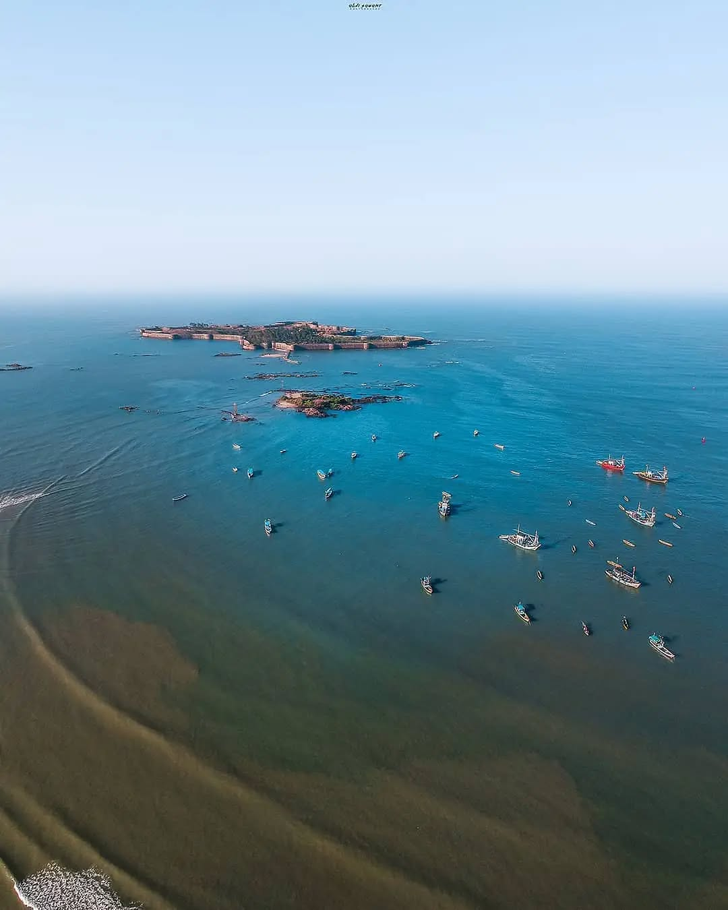
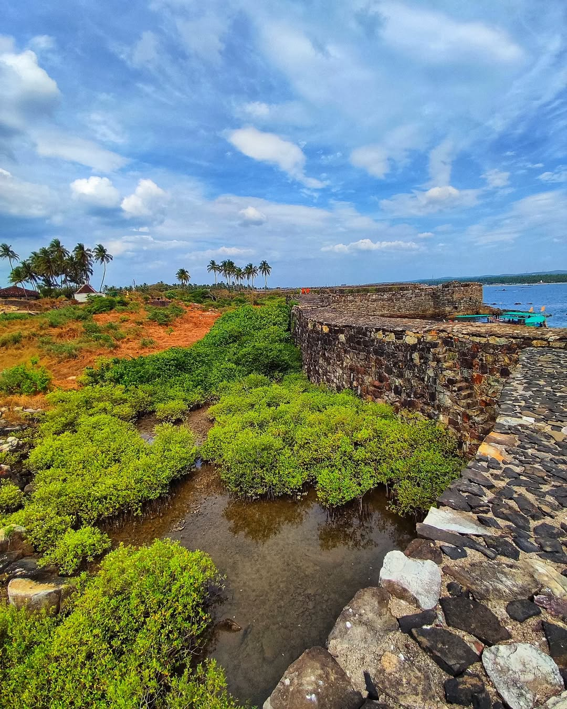
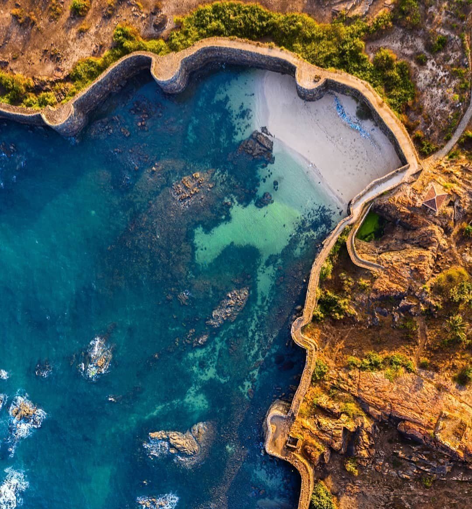
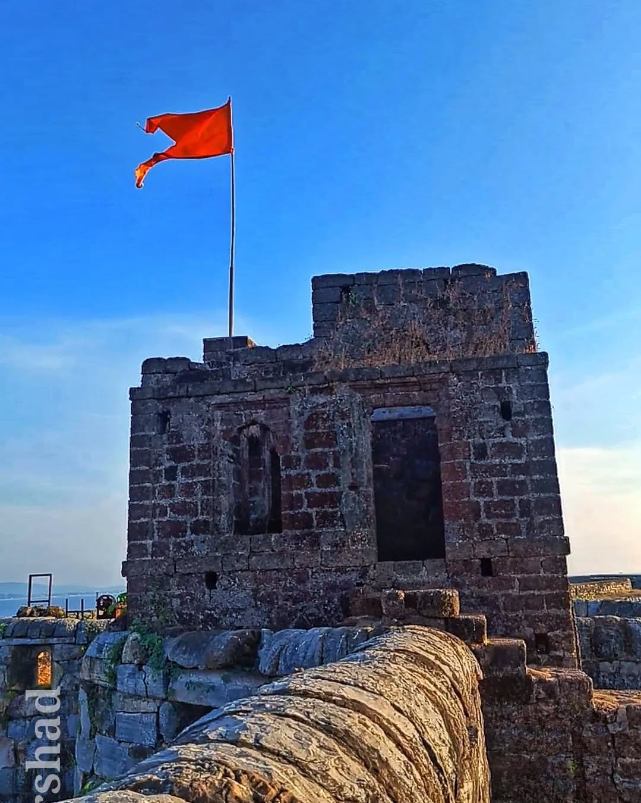
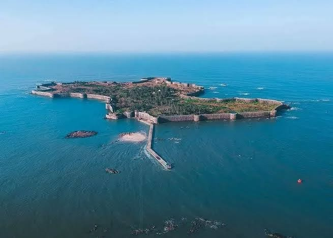
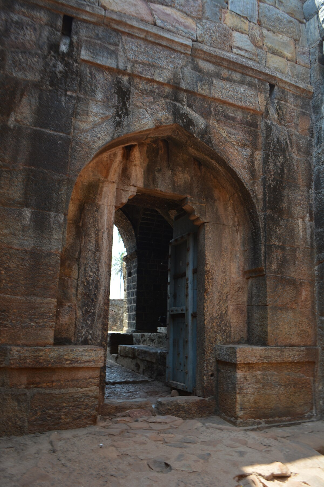
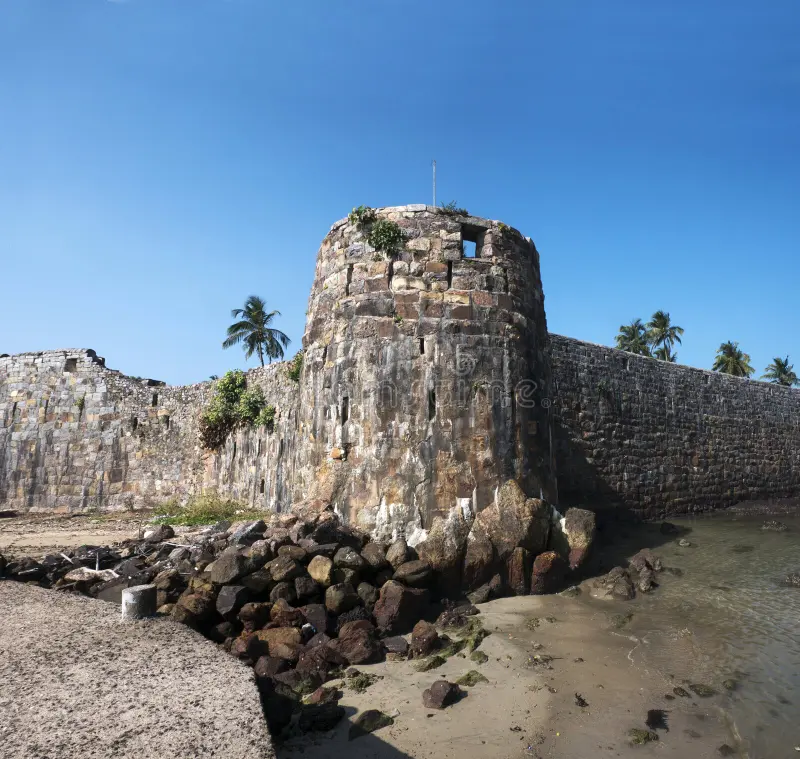
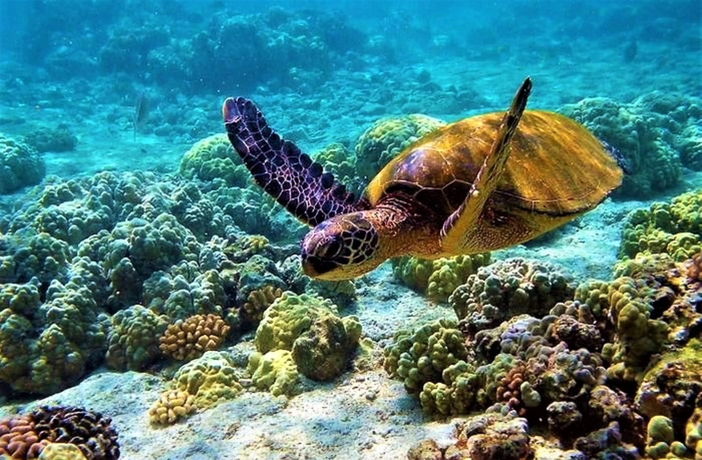
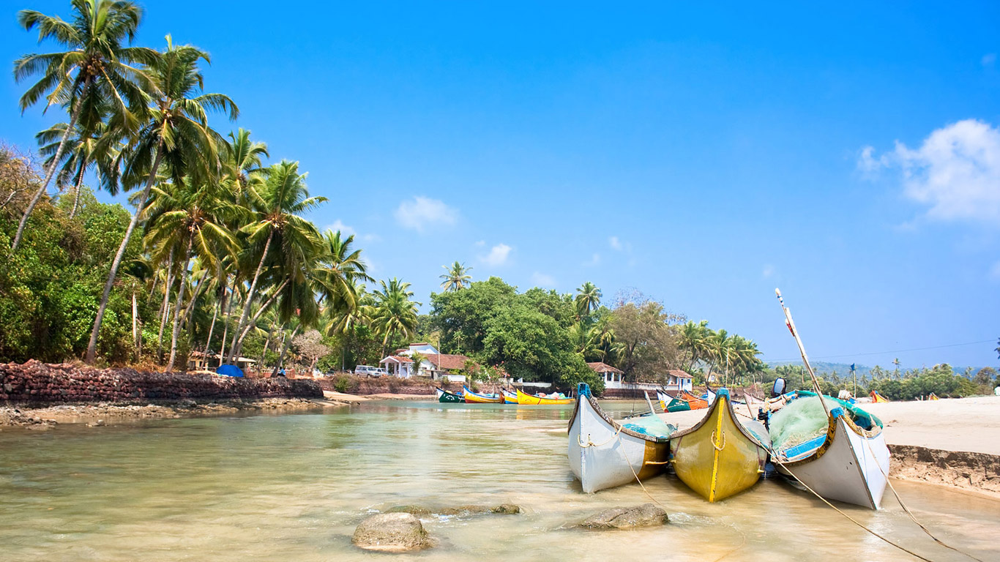

Sindhudurg Fort





Sindhudurg Fort, an iconic 17th-century coastal fort, stands majestically on a rocky island just off the Malvan coast in Maharashtra. Commissioned by the legendary Maratha king Chhatrapati Shivaji Maharaj, this architectural marvel was designed to strengthen the naval power of the Maratha Empire and protect its territory from foreign invasions. The fort was constructed under the supervision of Shivaji’s trusted architect, Hiroji Indulkar, and completed in 1664. Strategically located on the Kurte Island, Sindhudurg Fort is a testament to advanced military architecture. It features a massive stone wall stretching over 3 kilometers with 42 bastions, some of which are still intact. The fort's design cleverly integrates with the natural landscape, making it almost invisible from the mainland. Its concealed entrances and zigzag patterns along the fortifications were strategically planned to confuse enemies and repel attacks. A unique feature of Sindhudurg Fort is its freshwater wells, an extraordinary accomplishment for a sea fort. These wells ensured a steady water supply for its inhabitants. The fort also housed a temple dedicated to Shivaji Maharaj, one of the few such shrines in India, symbolizing the reverence for the Maratha ruler. The fort complex includes various structures like granaries, watchtowers, and residential quarters for soldiers, showcasing its self-sufficient design.

The fort’s architecture blends seamlessly with its rocky island, featuring concealed entrances and zigzag pathways, effectively confusing invaders and bolstering its impenetrable defense strategies.

Built under the vision of Chhatrapati Shivaji Maharaj, the fort symbolizes Maratha ingenuity, showcasing their advanced engineering and strategic prowess in fort construction.

Sindhudurg, a maritime marvel, served as a robust naval base, safeguarding the Maratha Empire’s vast coastline from enemy fleets and ensuring control over the Arabian Sea.

The main entrance gate of Sindhudurg Fort is called the Dilli Darwaza. This gate is notable for its clever design, as it is camouflaged and not easily visible from a distance, making it challenging for enemies to locate & breach. The gate's strategic placement and sturdy construction were integral to the fort's defenses .It is further reinforced with iron spikes to prevent damage from enemy elephants during sieges.Its design also includes an angular approach, forcing attackers into a vulnerable position, showcasing Shivaji Maharaj's strategic brilliance in fort construction.
.jpg)
Sindhudurg Fort houses a unique temple dedicated to Chhatrapati Shivaji Maharaj, known as the Shivrajeshwar Temple. This temple is significant as it is one of the few shrines in India where Shivaji Maharaj is worshipped as a deity. Established by his son, Rajaram Maharaj, the temple preserves Chatrapati Shivaji maharaj's warrior legacy and features a handprint and footprint believed to belong to the great Maratha king, etched in lime.The temple stands as a symbol of reverence and loyalty, reflecting the deep respect Shivaji Maharaj commanded among his people. The temple's architecture harmonizes with the fort's grandeur .

The watchtowers and bastions of Sindhudurg Fort are remarkable examples of the Maratha Empire's military ingenuity. Strategically located along the fort’s massive walls, these structures served as vantage points to monitor enemy movements and safeguard the fort from naval and land-based attacks. The bastions are reinforced with robust stone construction and feature small openings for artillery and firearms, allowing defenders to repel invaders effectively. From these elevated positions, one can enjoy panoramic views of the Arabian Sea, highlighting the fort's dominance over the surrounding coastline.

Distance: 7 km
The sanctuary is home to a diverse range of marine flora and fauna, including coral reefs, sea anemones, mollusks, crabs, starfish, and a variety of fish species. It is also known for its colorful coral beds that attract snorkelers and scuba diving enthusiasts.

Distance: 2 km
The Rock Garden in Malvan is a picturesque tourist spot located near the shoreline, offering stunning views of the Arabian Sea. Unlike traditional gardens, it is characterized by its unique rock formations and landscaped pathways

Distance: 8 km
Tarkarli Beach, located about 8 km from Malvan in Maharashtra, is a pristine and serene coastal destination, celebrated for its natural beauty and vibrant marine life. This beach is a favorite among travelers seeking relaxation, adventure, and scenic views.

Distance: 40 km
The temple is believed to have been built in the 11th century by the Yadava dynasty, with later contributions from Chhatrapati Shivaji Maharaj during the Maratha rule. Its rich history makes it a prominent cultural and religious landmark in the region.